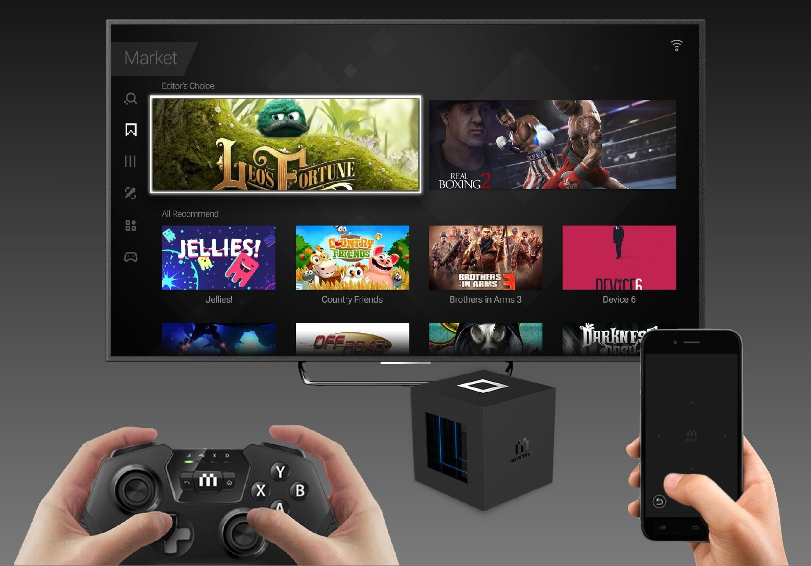
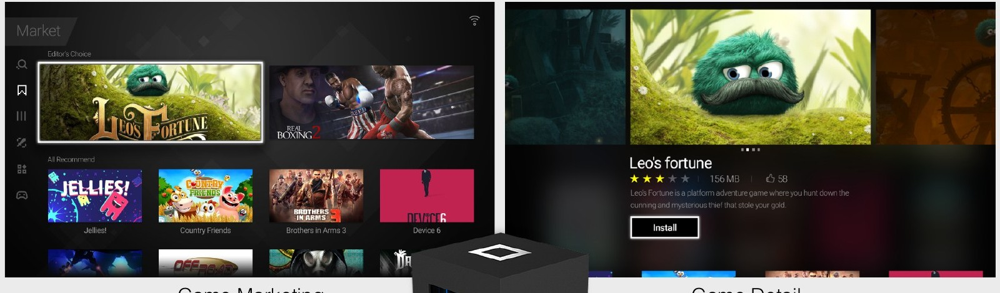
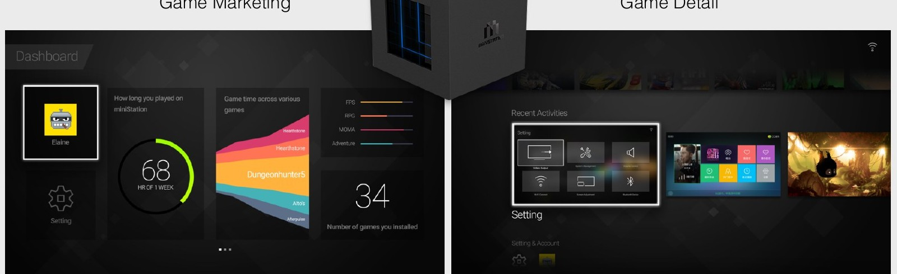

04 / LIVING ROOM PLAY
腾讯 miniStation
客厅里的游戏体验
围绕电视、游戏设备与控制端，组织内容发现、游戏详情与多任务管理，让大屏娱乐形成连贯体验。
- 项目
- miniStation
- 方向
- 游戏娱乐设备体验设计
- 范围
- 电视端界面 / 内容发现 / 多任务
01
从电视到控制端的完整场景
客厅里的游戏体验涉及多个设备。电视负责内容呈现，控制端负责操作，主机承接游戏与系统能力。设计需要在这些触点之间保持清楚的关系。
作品集通过电视、手柄、手机与主机的组合，呈现产品的使用情境。界面设计围绕大屏观看和控制端操作展开。

02
先发现内容，再理解游戏
首页以游戏视觉和内容卡片组织入口，让用户能够快速浏览并找到感兴趣的游戏。大幅主视觉与次级推荐区形成明确的浏览顺序。
进入详情页后，游戏介绍与操作入口围绕当前内容组织。发现和详情保持连续，使用户从浏览自然进入下一步。

03
为游戏之外的操作留出清晰入口
游戏体验也包含系统查看与任务切换。作品集将 Dashboard 和 Multitasking 作为独立场景展示，区分内容浏览与系统管理。
面板用大块信息和明确分区呈现状态，多任务界面则把当前任务放进可浏览的列表中。这些设计共同补齐了游戏前后和任务之间的操作。
图文依据：LIYOU PORTFOLIO 2024，第 91—93 页。文字依据作品图示整理。
NEXT / QQ 浏览器 ↗